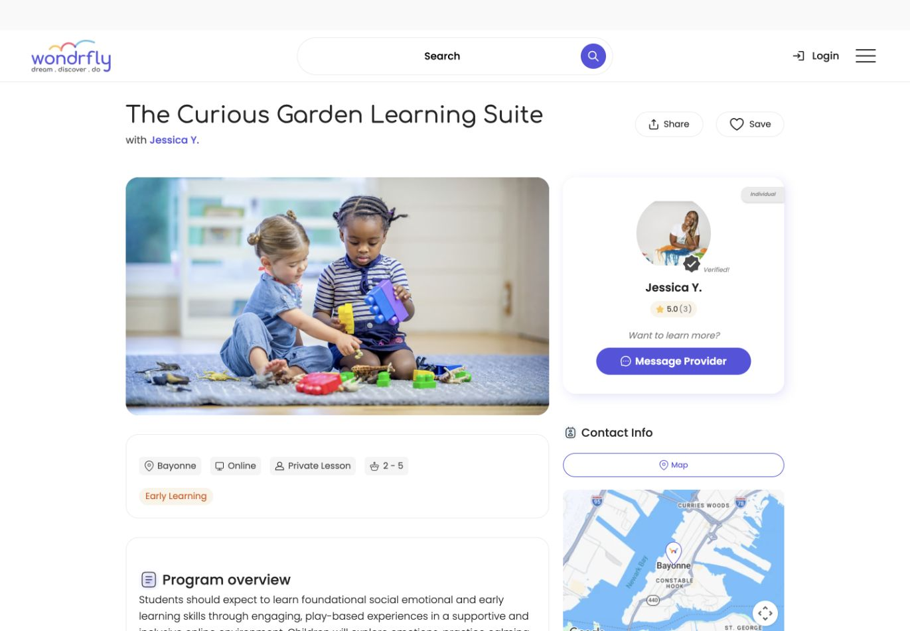
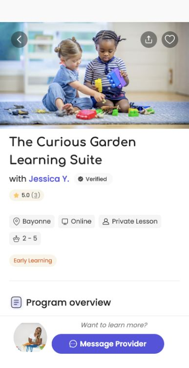
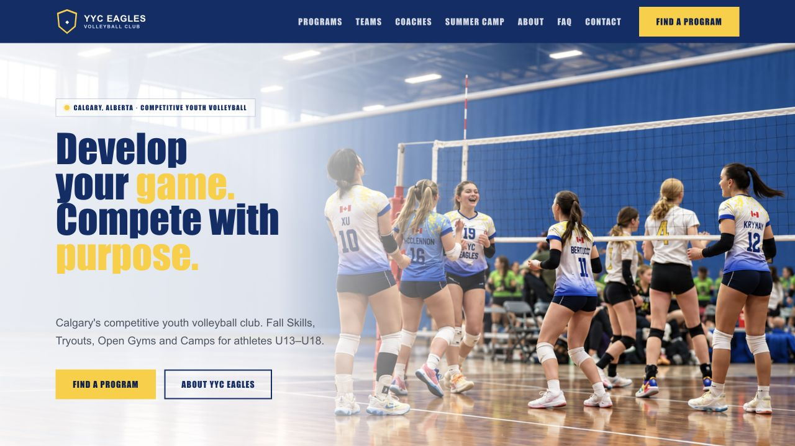
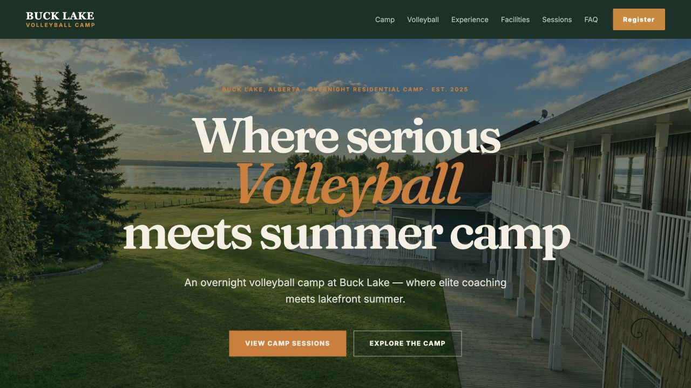
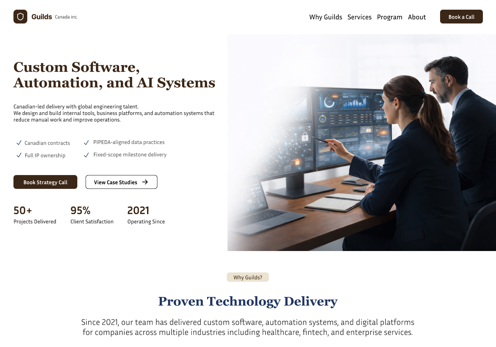

Research & strategy
User research · Information architecture · Product thinking · Content strategy
Visual, digital & product designer
I design websites, mobile apps, and digital platforms. I bring research and visual design together to make them clear, useful, and easy to use.
Visual direction,
thoughtful layouts,
design carried into the details.
Selected portfolio
A selection of my work across digital products, websites, mobile apps, and platforms. I work from research and early ideas through design and implementation.


01 · Product platform · Web + mobile
Bringing a family platform to mobile
Research through delivery

02 · Sports website
From a busy club site to clearer program discovery
Preview · Awaiting client approval

03 · Camp & venue website
From a shared page to a destination of its own
Preview · Awaiting client approval

04 · B2B website redesign
A new presentation for a Canadian audience
Design complete · Development by the company
Skills & tools
I bring research, visual craft, and practical making together to move ideas forward.
User research · Information architecture · Product thinking · Content strategy
User flows · Wireframes · Prototyping · Accessibility · Web & mobile experiences
Visual direction · Design systems · Typography · Colour · Interface design
HTML · CSS · JavaScript · Front-end collaboration · Design handoff
I use tools like Figma Make and Claude to explore ideas, try different directions, and help with design and implementation. They also help me move faster through research, prototyping, and code. I guide the decisions and review the results.
How I work
Type, colour, and imagery give each project its character.
Hierarchy helps people find and compare information.
I carry ideas through design and into working digital experiences.
About me
I'm a Visual, Digital, and Product Designer who creates clear, accessible experiences for people—across websites, mobile apps, and digital products.
My background spans user research, product and website design, visual direction, and responsive implementation. I also have product management training from the University of Alberta.
View résuméHave a project in mind?
Calgary, Alberta · Visual & Digital Design